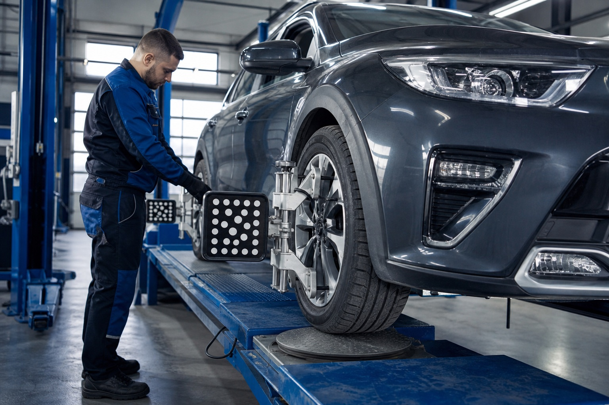

Siguranță mai bună la condus
Intervenție orientată către funcționare corectă, comunicare clară și rezultat tehnic verificabil.
Verificare și reglaj geometrie roți pentru stabilitate, siguranță și uzură uniformă a anvelopelor.

Dacă observi unul dintre aceste semne, este recomandată o verificare tehnică înainte ca problema să se agraveze.
Reglajul direcției ajută mașina să ruleze drept, predictibil și eficient. La Motorpext verificăm geometria roților și intervenim cu reglaje atunci când valorile nu sunt în parametri.
Un service corect înseamnă siguranță, confort și decizii mai bune pentru întreținerea mașinii.
Intervenție orientată către funcționare corectă, comunicare clară și rezultat tehnic verificabil.
Intervenție orientată către funcționare corectă, comunicare clară și rezultat tehnic verificabil.
Intervenție orientată către funcționare corectă, comunicare clară și rezultat tehnic verificabil.
Intervenție orientată către funcționare corectă, comunicare clară și rezultat tehnic verificabil.
Intervenție orientată către funcționare corectă, comunicare clară și rezultat tehnic verificabil.
Pași simpli, explicați clar, pentru ca programarea la service să fie predictibilă.
Discutăm simptomele și inspectăm elementele relevante.
Verificăm valorile cu echipamente dedicate.
Aducem unghiurile în parametrii potriviți, unde reglajul este posibil.
Confirmăm rezultatul și explicăm următorii pași, dacă sunt necesari.
Sună acum sau programează o vizită la service pentru o constatare clară.
Pentru o constatare completă, aceste servicii pot fi relevante în aceeași vizită.
Reglajul este recomandat când mașina trage într-o parte, volanul nu stă drept, anvelopele se uzează neuniform sau după intervenții la direcție ori suspensie.
Durata depinde de starea mașinii și de reglajele necesare, dar verificarea și reglajul sunt de regulă lucrări rapide pentru un service echipat corespunzător.
Cauzele pot include geometrie incorectă, presiune diferită în anvelope, uzură la direcție sau suspensie ori probleme la sistemul de frânare.
Da, mai ales dacă există uzură neuniformă, vibrații sau dacă au fost schimbate componente de suspensie ori direcție.
Da. O geometrie corectă reduce uzura neuniformă și poate prelungi durata de viață a anvelopelor.
Sună pentru disponibilitate, detalii despre lucrare sau o programare la atelierul Motorpext din Oradea.